Version 1.0 · översatt artikel
Styr en LEGO Mindstorms EV3-robot i förstaperson
Skärmbilderna är från originalartikeln och har retuscherats så att gränssnittstexten är på svenska. De orörda originalen visar det ryska gränssnittet.
En robot byggd av LEGO Mindstorms EV3-satsen kan enkelt fjärrstyras i förstaperson. Du behöver då två smartphones till, med appen RoboCam installerad på den ena. Låt oss lära känna RoboCam närmare och lära oss använda den.
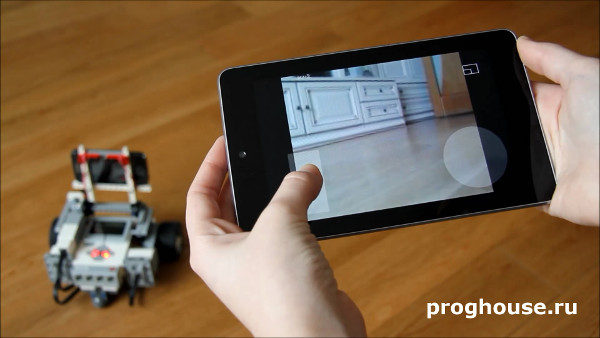
Den här artikeln beskriver den första versionen, 1.0, av RoboCam. Alla artiklar om RoboCam finns här. Du kan installera RoboCam från Google Play, eller ladda ner APK-filen och installera den manuellt: den vanliga versionen av RoboCam eller versionen av RoboCam som använder RenderScript (för vissa äldre telefoner); båda är utgåva 1.4.5. Det finns också en APKPure-spegling.
Låt oss först titta på videon som visar den förstapersonsstyrda roboten jag kallar EV3 Explorer. Förutom att köra i alla riktningar kan roboten lyfta och sänka huvudet, det vill säga ramen som telefonen sitter fast på. Det betyder att du kan titta inte bara åt sidorna utan också uppåt och nedåt.
Vad behöver du för experimentet?
För att upprepa experimentet i videon behöver du följande:
- En robot byggd av LEGO Mindstorms EV3-satsen.
- En Android-telefon med kamera och appen RoboCam installerad. Android 2.3 och senare stöds. Telefonen måste ha minst en kamera, samt Bluetooth- och Wi-Fi-moduler.
- En telefon eller surfplatta med en modern webbläsare som stöder HTML5. Senaste versionerna av Google Chrome, Yandex Browser, Firefox och Opera fungerar bra och har testats. Operativsystemet kan i princip vara vilket som helst (Android, iOS eller Windows), men fullständiga tester gjordes bara på Android. Telefonen eller surfplattan måste ha minst en pekskärm (helst med stöd för minst 2 samtidiga beröringspunkter) och en Wi-Fi-modul.
Längre fram i artikeln ger jag teorin och beskriver de steg du behöver ta för att upprepa experimentet.
Anslutningsschema
Först tittar vi på hur alla ovanstående enheter är anslutna till varandra. Bilden nedan illustrerar det bäst.
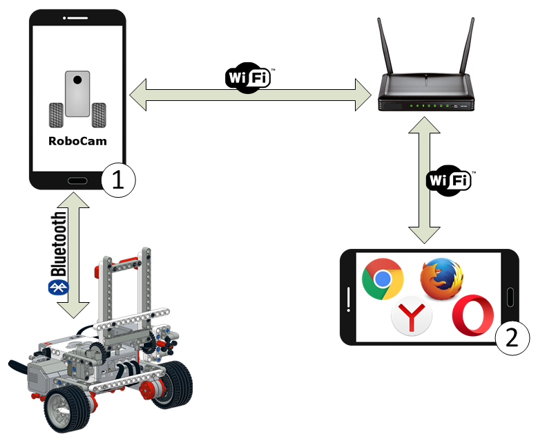
Som du ser är RoboCam installerad på telefon 1. Den här telefonen är fäst på roboten och ansluten till den via Bluetooth. Kommandon som styr motorerna går från telefon 1 till EV3, och sensorinformation kommer tillbaka.
Den andra telefonen eller surfplattan ansluter till telefon 1 via Wi-Fi. Telefon 1 och telefon eller surfplatta 2 måste vara anslutna till samma router. Joystickkoordinater går från telefon eller surfplatta 2 till telefon 1, och videoströmmen från kameran kommer tillbaka.
Så styrs EV3
För att bättre förstå hur EV3-roboten styrs, titta på följande schema.
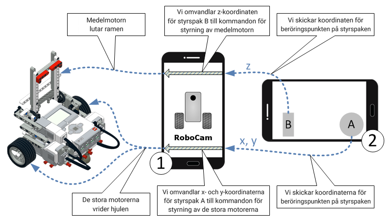
När du börjar röra vid styrspakarna A och B skickar telefon eller surfplatta 2 beröringskoordinaterna till telefon 1, som omvandlar dem till kommandon för EV3-motorerna. Hur koordinaterna omvandlas beror på RoboCams inställningar. Om inställningarna pratar vi mer nedan.
Bygga roboten
För att upprepa experimentet måste du först bygga roboten du ska styra. Det kan vara en enkel tvåhjulsrobot, en robotbil eller en robot med komplex drivning. Det spelar egentligen ingen roll hur din robot ser ut, eftersom RoboCam kan ställas in flexibelt och du kan styra en robot med vilken konstruktion som helst. Huvudsaken är att du kan fästa telefonen på roboten så att kameran pekar framåt, i färdriktningen.
Jag rekommenderar att du börjar med en enkel modell. Om du har utbildningssatsen LEGO Mindstorms Education EV3 kan du bygga EV3 Explorer som syns på fotot och videon i början av artikeln. Här är bygganvisningen för EV3 Explorer:
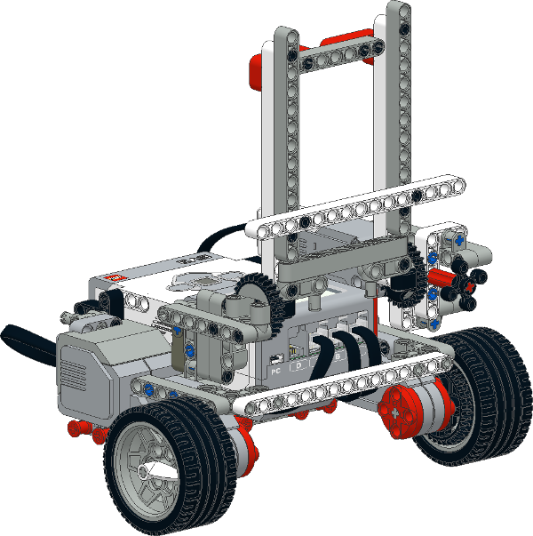
| Bygganvisning för EV3 Explorer Version: 2 | |
Anvisning för att bygga roboten EV3 Explorer av basutbildningssatsen LEGO Mindstorms Education EV3 (45544). I version 2 är ramen fastsatt stadigare och lossnar inte. |
|
| 04.06.2016 4.95 MB 15561 |
Förbereda Android-telefonen och appen RoboCam
RoboCam fungerar på telefoner eller surfplattor med Android 2.3 och senare. Enheten måste ha någon inbyggd kamera samt Bluetooth- och Wi-Fi-moduler. Appen är gratis; du kan installera den från Google Play eller ladda ner och installera den manuellt. Här är sidan för RoboCam. För att installera trycker du på knappen «INSTALLERA» och godkänner de begärda behörigheterna genom att trycka på «GODKÄNN».
För en manuell installation finns 2 versioner: den vanliga versionen av RoboCam och versionen av RoboCam som använder RenderScript (för vissa äldre telefoner); båda är utgåva 1.4.5. Spegeln APKPure har Play Store-utgåvan.
Efter installationen öppnar du appen. På Android 6 och senare får du direkt en begäran om tillåtelse att använda kameran. Vi behöver definitivt kameran, så tryck på «TILLÅT».
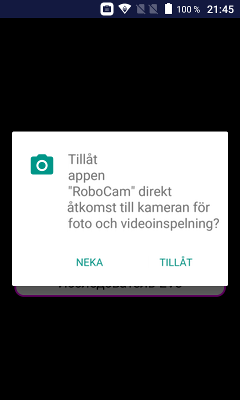
När appen har öppnats ser du tre runda knappar för huvudåtgärderna, och kamerabilden i bakgrunden.
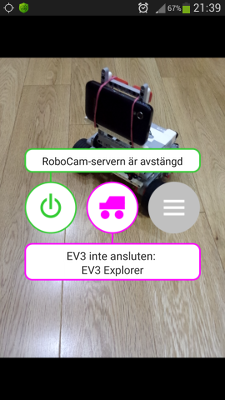
Den gröna knappen till vänster startar och stoppar RoboCam-servern, som behövs för att ansluta telefon eller surfplatta 2, se schemat ovan. Knappen visar samtidigt om servern körs. På bilden är knappens bakgrund vit, vilket betyder att servern inte körs. Det säger också tipset högst upp. Du kan när som helst starta eller stoppa servern genom att trycka på knappen.
Den mittersta lila knappen ansluter till EV3-roboten. Knappen visar samtidigt om telefonen är ansluten till roboten. På bilden är knappens bakgrund vit, vilket betyder att roboten inte är ansluten. Den här knappen har också ett tips, precis under knappen: den övre raden visar anslutningsstatus (på bilden texten «EV3 inte ansluten») och den nedre raden visar namnet på de aktuella robotinställningarna (på bilden «EV3 Explorer»).
Knappen till höger öppnar RoboCams inställningar. Om du använder min EV3 Explorer behöver du inte ställa in något mer, eftersom inställningarna «EV3 Explorer» är valda som standard direkt efter första starten. Om din robot är en annan får du först pyssla med inställningarna. Det tar vi nedan.
Starta RoboCam-servern och ansluta till den
Jag säger direkt att det inte spelar någon roll vad du gör först: starta RoboCam-servern eller ansluta telefonen till roboten. Du kan göra det i vilken ordning som helst.
När appen är installerad på telefon 1 (se schemana ovan) och öppen kan du starta RoboCam-servern. Tryck på den gröna knappen till vänster; knappen börjar blinka och tipset säger «Initierar RoboCam-servern...». Efter en stund, när servern har startat, blir knappens bakgrund grön och tipset säger «RoboCam-servern körs».
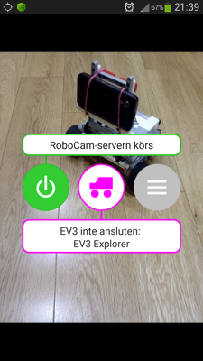
Om telefonen ännu inte är ansluten till din Wi-Fi-router (som på vår bild) är det dags att göra det. Efter anslutningen visas adressen för anslutning till RoboCam-servern på andra raden i tipset högst upp. När du slår på servern spelar det ingen roll om du startar RoboCam-servern eller Wi-Fi först.
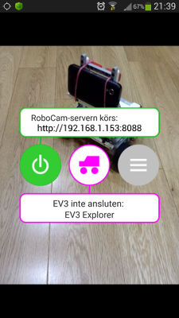
Nu kan du ansluta till RoboCam-servern. Ta den andra telefonen eller surfplattan (jag använder en surfplatta), se till att den är ansluten till samma Wi-Fi-router, öppna en webbläsare och gå till sidan med adressen som visas i tipset i RoboCam (på bilden «http://192.168.1.153:8088»). Använd någon av webbläsarna som nämndes ovan. Om du gjort allt rätt laddas en sida för inloggning i webbläsaren. Ange ditt användarnamn och lösenord och tryck på «Logga in». Om du inte har ändrat något i inställningarna efter installationen är standardanvändarnamnet «admin» och lösenordet «123».
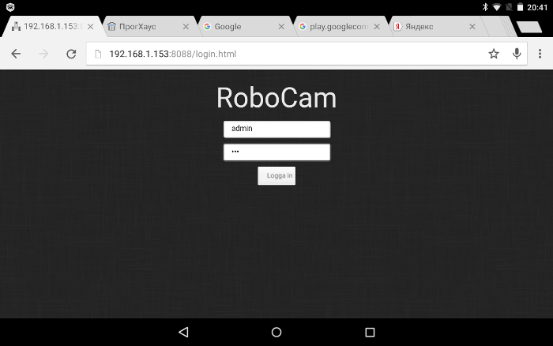
Därefter öppnas RoboCam-serverns huvudsida, som visar bilden från kameran på telefon 1 (se schemat ovan).
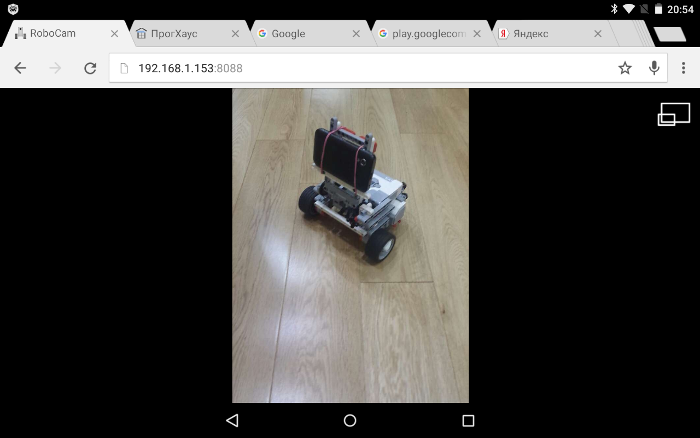
Som du ser är telefon 1 i stående orientering och min surfplatta i liggande. Du kan vrida telefon 1 så att den också är i liggande orientering. Bilden på surfplattan ändras då automatiskt till liggande.
Observera att orienteringen inte ändras om du har låst telefon 1.
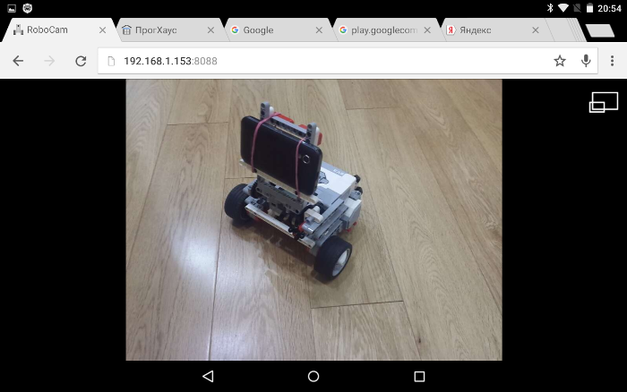
För att få bilden att fylla skärmen, tryck på ikonenuppe till höger på sidan. Då försvinner alla knappar och webbläsarflikar vi inte behöver, och kamerabilden blir större.
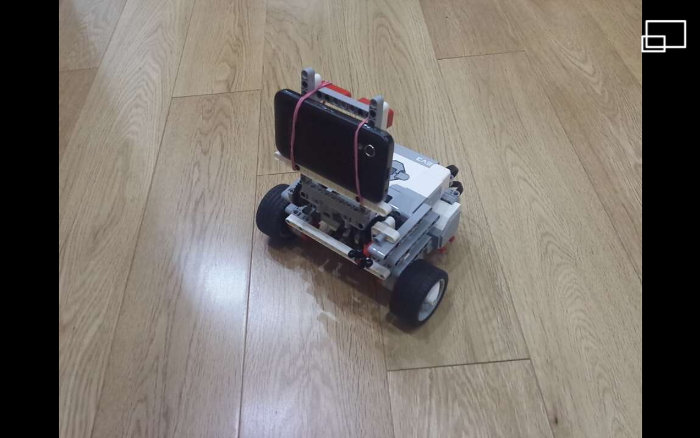
Ansluta RoboCam till EV3
Innan du ansluter RoboCam till EV3, se till att Bluetooth är påslaget både på din EV3-robot och på telefonen och att de är parkopplade. Se också till att motorerna är anslutna till exakt de portar som anges i robotinställningarna. Namnet på de aktuella inställningarna står i tipset på andra raden under mittenknappen; på bilden nedan är det «EV3 Explorer». Om du byggt EV3 Explorer enligt min anvisning (se ovan) och inte ändrat inställningarna efter installationen av RoboCam kan du vara säker på att allt är rätt inställt. Inställningarna beskrivs i detalj nedan.
Om allt är klart trycker du alltså på den centrala lila knappen. Om Bluetooth visar sig vara avstängt på telefonen får du en begäran om att slå på det. Tryck på «Ja».
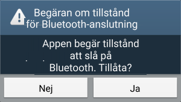
Sedan ser du knappen börja blinka, och en lista över Bluetooth-parkopplade enheter visas i stället för tipset. Välj din EV3-robot här (på bilden heter den «EV3», men din EV3 kan ha ett annat namn).
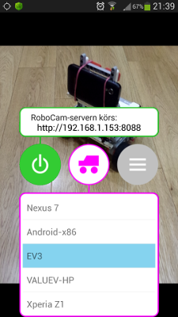
Därefter ansluter appen till EV3.
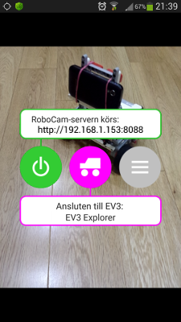
Om klienten är ansluten till RoboCam-servern vid det här laget ser du styrspakarna dyka upp (den rektangulära och den runda styrspaken på bilden nedan). Därefter kan du styra roboten direkt.
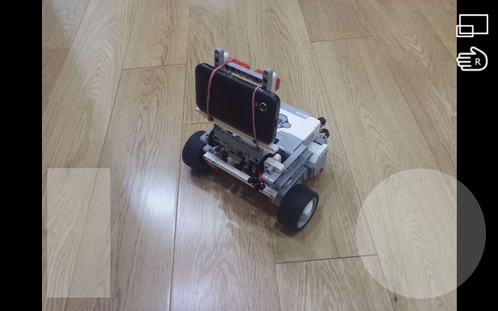
Med standardinställningarna för EV3 Explorer har du två styrspakar: en rund och en vertikal (se bilden ovan). Den vertikala styrspaken styr ramen som håller telefonen, och den runda styr robotens rörelser. Ikonen med en handflata uppe till höger byter plats på styrspakarna, så att du snabbt kan växla layouten för vänster- eller högerhänta. Mer om styrspakar nedan.
Stoppa RoboCam-servern och koppla från EV3
När du är klar med att styra roboten rekommenderas det att stoppa RoboCam-servern och koppla från EV3 från telefonen innan du stänger appen RoboCam. Du kan göra det i vilken ordning som helst. För att stoppa servern trycker du på den gröna knappen till vänster. Knappens bakgrund blir då vit och tipset visar «RoboCam-servern är avstängd». För att koppla från EV3 trycker du på den centrala lila knappen. Knappens bakgrund blir då vit och den övre raden i tipset visar «EV3 inte ansluten». Motorerna stannar eller går till utgångsläget, beroende på inställningarna.
RoboCams serverinställningar
För att öppna inställningarna trycker du på den grå knappen till höger.
Inställningarna är uppdelade i 2 delar: serverinställningar och robotinställningar. Först tittar vi på vad som finns i serverinställningarna. Välj «Server».
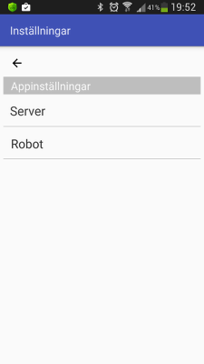
Serverinställningarna är indelade i 2 grupper: kamerainställningar och säkerhetsinställningar. I kamerainställningarna kan du välja kamera (fram eller bak), bildstorlek och JPEG-kvalitet. Ju mindre bildstorlek du väljer, desto jämnare och snabbare når videon klienten, men bildkvaliteten försämras. JPEG-kvaliteten påverkar videon på samma sätt: ju bättre JPEG-kvalitet (90 procent eller mer), desto bättre bild men lägre hastighet; och ju sämre JPEG-kvalitet (40 procent eller mindre), desto högre hastighet men sämre bild. Välj det som passar dig bäst.
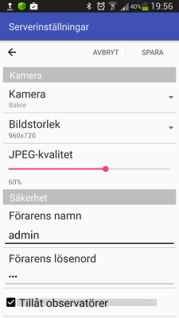
I säkerhetsinställningarna kan du ändra förarens namn och lösenord (som standard är namnet «admin» och lösenordet «123»). Observatörer är också påslagna som standard. Observatörer kan se kamerabilden parallellt med dig men kan inte styra roboten. Även för en observatör kan du ange namn och lösenord (som standard namnet «guest» och lösenordet «123»). För att stänga av observatörer avmarkerar du «Tillåt observatörer».
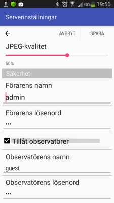
Antalet förare och observatörer är inte begränsat, men att ansluta fler än en förare kan orsaka konflikter vid samtidig styrning och videoöverföring. Det rekommenderas inte att ansluta fler än en förare till RoboCam-servern. Ett stort antal observatörer kan också försämra videoöverföringen. Det är bäst att minska observatörerna till ett minimum eller stänga av funktionen helt.
Efter att du ändrat inställningarna kan du spara dem genom att trycka på knappen «SPARA» uppe till höger, eller lämna utan att spara genom att trycka på knappen «AVBRYT» eller pilen uppe till vänster. När serverinställningarna har sparats kan klienter kopplas från och måste ansluta igen.
Lista över robotinställningar
Den andra delen av RoboCams inställningar är robotinställningarna. Tryck på «Robot» för att gå till listan över robotinställningar.
I listan över robotinställningar ser du inställningarna för alla dina robotar. Du kan när som helst lägga till eller ta bort inställningar med knappen «LÄGG TILL» eller «TA BORT» uppe till höger. Precis under knapparna ser du de aktuella inställningarna. Med det här alternativet växlar du mellan inställningarna för dina robotar. Nu tittar vi på inställningarna för EV3 Explorer. Välj då «EV3 Explorer» i listan.
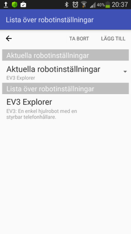
Allra överst finns den allmänna informationen: robotens namn och beskrivning. Namn och beskrivning visas i listan så att du lätt hittar rätt inställningar. Namnet visas också på appens huvudskärm under den centrala knappen som du ansluter till EV3 med. Därefter kommer styrspaksinställningarna.
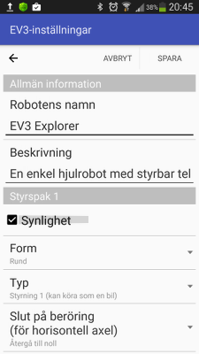
Du kan ställa in upp till 4 styrspakar totalt, men bara ett par styrspakar, 1-2 eller 3-4, syns på klientens skärm åt gången. Även om du använder styrspakarna 1 och 3 syns de inte samtidigt, eftersom de hör till olika par; du ser antingen styrspak 1 eller styrspak 3. Varje styrspaks synlighet slås på med kryssrutan «Synlighet». Om du har aktiverat 2 par styrspakar visas en knapp på klientskärmenför att växla mellan paren.
I inställningarna ser du alltså grupperna «Styrspak 1», «Styrspak 2», «Styrspak 3» och «Styrspak 4». Var och en innehåller inställningarna för en styrspak. Vi tittar på inställningarna för «Styrspak 1». Kryssrutan «Synlighet» visar eller döljer, som du förstått, styrspaken. Om kryssrutan inte är markerad döljs även inställningarna för den styrspaken.
Lite längre ner, i listan «Form», kan du välja styrspakens form, och med formen dess egenskaper. Följande former finns: vertikal, horisontell, rund, kvadratisk, pilar, vertikala pilar och horisontella pilar. Så här ser styrspakarna ut:
Den vertikala styrspaken känner bara av beröringens höjd, det vill säga det spelar ingen roll om du rör vid den längre åt vänster eller höger, bara på vilken höjd. Beröringskoordinaten går för den från -100 längst ner till 100 längst upp, med 0 i mitten.
Den horisontella styrspaken fungerar likadant, men horisontellt. Det spelar ingen roll på vilken höjd beröringen sker, bara om den är till vänster eller höger. Här beräknas beröringskoordinaten horisontellt från -100 längst till vänster till 100 längst till höger, med 0 i mitten.
Den runda och den kvadratiska styrspaken liknar varandra. De bestämmer beröringskoordinaterna på både horisontell och vertikal axel, också från -100 till 100 med 0 i mitten. Men i den runda styrspaken kan beröringar inte hamna utanför cirkeln. Om beröringspunkten ligger utanför cirkeln tas alltså den punkt där linjen från beröringspunkten till cirkelns mitt korsar cirkelns omkrets. Det syns tydligare på bilden nedan.
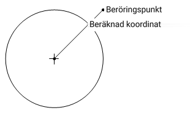
Pilstyrspakarna är inte känsliga för beröringspunkten; det som räknas är vilken pil du rör vid. Om du rör vid uppåtpilen anses styrspakens vertikala koordinat vara 100 och den horisontella 0. För nedåtpilen är den horisontella koordinaten också 0 och den vertikala blir -100. På samma sätt för vänster- och högerpilarna: den vertikala koordinaten är 0 och den horisontella är -100 respektive 100.
Direkt under formen väljer du styrspakens typ i listan «Typ». Du kan välja ett av följande värden: «Oberoende motorer», «Styrning 1», «Styrning 2» och «Brevlåda».
Styrspakar av typen «Styrning 1» och «Styrning 2» låter dig styra en robot med två oberoende drivhjul, som EV3 Explorer. Beröringskoordinaterna på sådana styrspakar omvandlas automatiskt till motorkommandon. För styrspaken behöver du bara välja vilken port som har vänster hjul och vilken som har höger. Det beskrivs lite längre ner.
«Styrning 1» låter dig köra en tvåhjulig robot som en bil. Du kan inte vända roboten på stället med den. Ju närmare mitten beröringen ligger vertikalt, desto lägre hastighet. «Styrning 2» låter roboten snurra på stället.
En styrspak av typen «Oberoende motorer» omvandlar den horisontella beröringskoordinaten till motorkommandon oberoende av den vertikala koordinaten. För styrspaken måste du ange vilken motor som styrs när den horisontella koordinaten ändras och vilken när den vertikala koordinaten ändras. Den här typen av styrspak kan användas för att köra en bil där en motor styr och en andra motor driver drivhjulen. I så fall ställs ändringen av den horisontella koordinaten in på att vrida den första motorn och ändringen av den vertikala koordinaten på att vrida den andra motorn.
En styrspak av typen «Brevlåda» skickar bara vidare beröringskoordinaterna till EV3-brevlådor. För att din robot ska väckas till liv måste du skriva ett EV3-program som bearbetar koordinaterna. Med den här typen av styrspak kan du bygga mer komplexa styrmodeller för roboten, eftersom du kan implementera din egen algoritm för att omvandla koordinaterna från styrspaken till motorkommandon. Du kan till exempel bygga styrning för EV3 Gyro Boy. Styrspak 1 skickar koordinater till brevlådor med namnen x och y, styrspak 2 till brevlådorna w och z, styrspak 3 till brevlådorna a och b och styrspak 4 till brevlådorna c och d.
De nästa två inställningarna, «Slut på beröring (för horisontell axel)» och «Slut på beröring (för vertikal axel)», bestämmer vad som händer när du slutar röra vid styrspaken. Du kan välja ett av två alternativ: «Återgå till noll» eller «Behåll position». Att återgå till noll är lämpligt i de flesta situationer; om du till exempel vill att roboten ska stanna när du slutar röra vid styrspaken är «Återgå till noll» rätt val. Att behålla positionen är användbart när den senaste beröringskoordinaten ska kommas ihåg. Det används till exempel för att luta EV3 Explorers ram. Inställningen finns för alla styrspaksformer utom pilstyrspakar.
Om du använder styrspakstypen «Oberoende motorer», «Styrning 1» eller «Styrning 2» hittar du portinställningarna för den styrspaken nedanför. De portar styrspaken styr kan läggas till och tas bort med knapparna «LÄGG TILL» och «TA BORT». Antalet portar är inte begränsat. Den första bilden nedan visar inställningarna för en styrspak av typen «Oberoende motorer», och den andra för en styrspak av typen «Styrning 1» och «Styrning 2». Som du ser finns en liten skillnad.
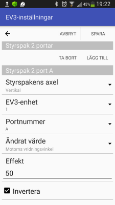
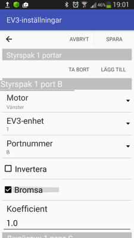
Vi går igenom portinställningarna. Inställningen «Styrspakens axel» finns bara för en styrspak av typen «Oberoende motorer». Det finns två alternativ: «Horisontell» och «Vertikal». Om du väljer «Horisontell» reagerar motorn bara på ändringar av beröringskoordinaten på den horisontella axeln, och om du väljer «Vertikal» reagerar den på beröringar på den vertikala axeln.
Inställningen «Motor» finns bara för en styrspak av typen «Styrning 1» eller «Styrning 2». Här väljer du mellan «Vänster» och «Höger».
Inställningen «EV3-enhet» behövs om du byggt en robot med flera EV3-enheter kopplade i en «seriekoppling». Här kan du välja ett enhetsnummer från 1 till 4. Om du bara använder en EV3-enhet ska det alltid vara 1.
Med inställningen «Portnummer» väljer du motorport, A till D.
Inställningen «Ändrat värde» finns bara för en styrspak av typen «Oberoende motorer». Det finns två alternativ: «Motoreffekt» och «Motorns vridningsvinkel». Om du väljer «Motoreffekt» påverkar styrspaken motorns effekt, det vill säga ju längre från styrspakens mitt du rör vid, desto snabbare snurrar motorn. Om du väljer «Motorns vridningsvinkel» påverkar styrspaken motorns vridningsvinkel, det vill säga ju längre från mitten du rör vid, desto större vinkel vrids motorn. I så fall ställs motorns effekt in med inställningen «Effekt». Ju större det här talet är, desto snabbare reagerar motorn på en ändring av beröringskoordinaten och desto bättre håller den vinkeln.
Genom att markera «Invertera» inverteras den beräknade effekten eller vinkeln, och «Koefficient» ökar eller minskar det beräknade värdet.
När «Bromsa» är markerad stannar motorerna snabbt, det vill säga de bromsar. När den är avmarkerad fortsätter motorerna att snurra en stund av tröghet tills de stannar helt.
Det var i princip alla inställningar som finns i RoboCam.
Ansluta utan router
Nu några knep som kan göra RoboCam lite bekvämare att använda. Om det inte finns någon router i närheten, till exempel om du är utomhus, kan du ordna en anslutning mellan telefon 1 och telefon eller surfplatta 2 direkt. För det slår du på hotspot på telefon 1 (hotspot slås i Android vanligtvis på i inställningarna för nätverksanslutningar). När den är påslagen blir telefon 1 en Wi-Fi-router och du kan utan problem ansluta surfplatta eller telefon 2 till den. Så här ser anslutningen ut schematiskt.
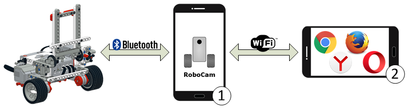
RoboCam-serverns adress får du reda på på samma sätt, från knappens tips. I de flesta fall är adressen för en sådan hotspot alltid http://192.168.43.1:8088.
Använda telefon 1 som styrspak
Det finns ytterligare ett knep du kan göra med RoboCam. Starta servern på telefon 1 (den där RoboCam är installerad), anslut till roboten, starta sedan en webbläsare på samma telefon (naturligtvis en som stöder HTML5) och gå till adressen http://localhost:8088. Du ser sidan för inloggning. Logga in som förare. Efter inloggningen ser du styrspakarna och kan styra roboten. I det här fallet överförs dock ingen kamerabild. Wi-Fi kan stängas av.
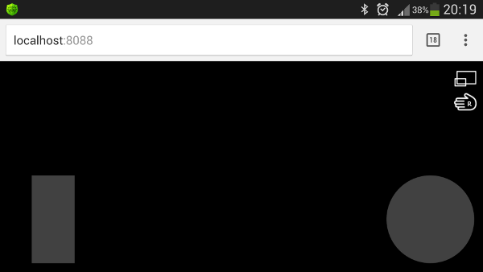
Sammanfattning
Jag hoppas att jag har gett tillräckligt med information om hur man kan använda RoboCam. Om du har frågor om appen eller förslag kan du lämna dem i RoboCam-gruppen.
Alla RoboCam-versioner
- v1.4.2 Förvandla en smartphone till fjärrkontroll för roboten med RoboCam
- v1.3.1 Bygg förstapersonsstyrning för en Arduino-robot
- v1.2 RoboCam – styr roboten i förstaperson med datorns tangentbord
- v1.1 Importera, exportera, kopiera och skicka robotinställningar i RoboCam
- v1.0 Styr en LEGO Mindstorms EV3-robot i förstapersondu är här